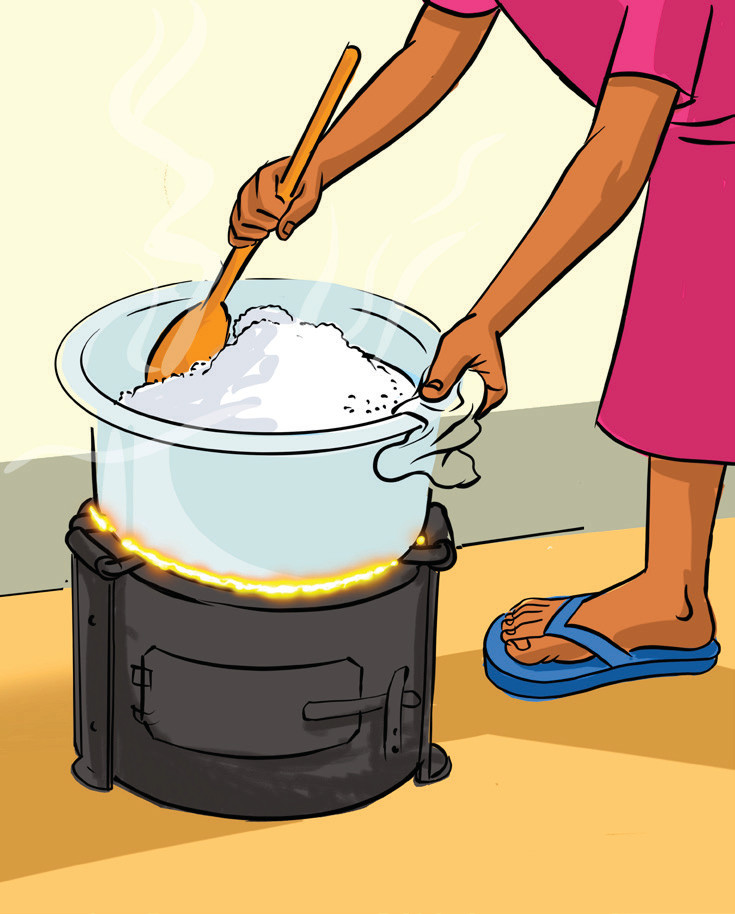
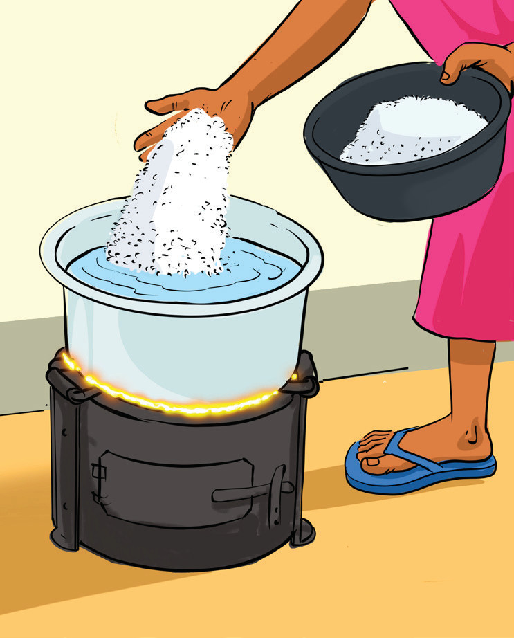

5Turning the rice to allow socking of water.

6Placing the rice in the pot of boiling water.
(g) Write a composition starting with a sentence, “Today, I will describe how to cook rice.”
Use words like “first,” “next,” “then,” and “finally” to guide the reader through the process.
Today I will describe how to cook rice. First,
Next,
.
Then,
Finally,